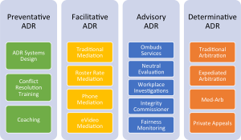

Abstract
One way or another, individual and organizational resources will be spent on conflict. This paper outlines a variety of ways in which conflict can be dealt with in the most effective, most efficient, and the most economical manner.
A spectrum of conflict resolution options will be reviewed and analyzed. Each option will be considered in light of when it is most appropriately employed, as well as, potential benefits and perceived drawbacks.
Problem Statement
Conflict is a major part of life. For many, conflict resolution can be stressful, costly and time-consuming. In Ontario, the decision of Canfield v. Brockville Ontario Speedway, 2018 ONSC 3288 (CanLII) has proven that not attempting to resolve conflict create even more cost, time-consumption, and stress.
Recognizing that conflict is inevitable, what are the most effective, most efficient, and least expensive ways to manage conflict?
Background
Conflict can be defined as “the result of the differences which make individuals unique and the different expectations individuals bring to life.” (2004, Fiadjoe) In the simplest of terms, conflict arises when one party takes issue with something that another party says or does.
Conflicts that involve legal rights, or a justiciable problem – defined as “a matter experienced by a respondent which raised legal issues, whether or not it was recognised by the respondent as being ‘legal‘ and whether or not any action taken by the respondent to deal with it involved the use of any part of the civil justice system” – are known as disputes. (2001, Genn and Paterson)
Unlike legal disputes, conflicts that arise out of non-legal matters are often recognized as disagreements, quarrels, or differences of opinion. While these types of conflicts may not initially appear to have legal repercussions, if they are not handled properly, they have the very real potential to become disputes.
Conflict, whether in the form of disagreements or disputes, can be costly. Depending on the matter, the cost of conflict may include economic losses, lost productivity, relationship breakdown, and (of course) the cost of litigation. (1998, Stitt)
Given the enormous price tag associated with conflict, individuals and organizations have, for some time, been seeking novel ways to resolve conflict. Alternative Dispute Resolution (ADR) is a spectrum of processes, other than litigation, that can be used to resolve disputes. (1998, Stitt)
Over the last several years, as ADR has become more mainstream, the use of the word “alternative” in Alternative Dispute Resolution has been called into question. Proposed replacements for the “alternative” in ADR include Appropriate, Amicable, Accelerated, or Additional. (2017, Lloyd) Acronyms such as IDR, Innovative Dispute Resolution, and BDR, Better Dispute Resolution, have also been suggested. (2005, Street) No matter what terminology or acronym is preferred, its intention is to reflect “a holistic concept of a consensus-oriented approach to dealing with potential and actual disputes. The concept encompasses dispute avoidance, dispute management and dispute resolution.” (2005, Street)
Another recent innovation in ADR has been Online Dispute Resolution (ODR). Parties can go online and use a virtual mediator that can help them resolve their disputes in a cost effective and productive manner. The parties can confidentially submit their numbers from anywhere in the world, and if there is a deal to be made the virtual mediator will help them make it. If there is no deal to be made the parties will be informed of that and would not be charged for the service. (2007, Winkler)
While ADR has not traditionally included dispute avoidance, resolving problems before they become legal matters has been shown to have numerous benefits. Not least of these benefits is the prevention of litigation. When the cost of taking a routine civil case through a three-day trial in Ontario is about $60,000, it is not surprising that corporations are investing in conflict prevention. (2007, Winkler)
Meanwhile, other organizations continue to choose the legal system to resolve their disputes. In Canfield v. Brockville Ontario Speedway, 2018 ONSC 3288 (CanLII), the defendants refused to mediate based on their belief that they had a sufficiently strong position so as not to warrant any attempt at settlement. The Court disagreed. Although the case was adjudicated in a jurisdiction that did not have a mandatory mediation program, the Court found that the defendants’ refusal to mediate was unreasonable and affixed costs accordingly. The following excerpt clarifies the Court’s reasoning:
[56] The present case is not one of those circumstances where a plaintiff was trying to shake down an insurer by demanding mediation of a wholly unmeritorious case. To the contrary, it is a case where the insurer took a tough and uncompromising stance. That, of course, is a defendant’s prerogative. Defendants do not have to settle. But if reasonable opportunities to mediate are spurned, that can be a relevant factor when fixing costs.
[57] It was, in my view, unreasonable for the insurer to decline mediation in this case. That should be reflected in the disposition of costs. Had a mediation occurred in 2015 or even in 2017, substantial costs could have been avoided.
While conflict may be inevitable, there are ways in which conflict can be prevented, or addressed, in order to maximize relationships and integrity while mitigating against the loss of financial and temporal resources. In the following section, the effective, efficient, and economical options for conflict resolution will be explored
Solution
Historically, the legal professional has been attributed the responsibility of resolving conflict. According to the Former US Chief Justice Warren Burger:
The obligation of the legal profession is to serve as the healers of human conflicts. To fulfil this traditional obligation of our profession means that we should provide the mechanisms that can produce an acceptable result in the shortest possible time with the least possible expense and with a minimum of stress on the participants. That is what a system of justice is all about. (1982, Burger)
Although it is said that lawyers are the healers of human conflict, it can equally be said that individuals and corporations also have a role to play in the prevention, management, and resolution of conflict. Where justice was once a concept exclusive to the courtroom, ensuring a just conflict resolution process now lies, in part, with the stakeholders.
Insurance providers, banks, health care organizations, hospitality companies, police services, and many other organizations are awaking the importance of effectively, efficiently, and economically managing conflict. Be it internal conflict, such as that among employees or between employees and management, or external conflict, such as that between an organization and its clients, having the right conflict protocol in place can save time, money, and stress for everyone involved.
ADR Chambers and the Stitt Feld Handy Group offer a wide-range of conflict solutions that are designed to provide the right process, at the right time, for the right price. These conflict solutions broadly fall under the categories of: (a) Preventative ADR; (b) Facilitative ADR; (c) Advisory ADR; and, (d) Determinative ADR, starting from the least interventionist processes and progressing to most interventionist processes.
Overview of Conflict Solutions and Services

Preventative ADR
- What is Preventative ADR?
Preventative ADR is considered the least interventionist approach to conflict because it equips organizations and individuals with the tools to self-manage conflict. Preventive ADR can be described as conflict avoidance processes that provide efficient and systematic management of disputes.(2008, Law Reform) Used effectively, Preventative ADR strategies can reduce, or eliminate, the need for third party intervention.
- Preventative ADR Services offered by ADR Chambers and the Stitt Feld Handy Group
Conflict Resolution Training – One of the most successful Preventative ADR services offered by ADR Chambers is Conflict Resolution Training. Through the Stitt Feld Handy Group, a division of ADR Chambers, experienced and engaging Instructors teach the art of effective conflict resolution. Some training programs are offered directly to the public, while others are customized to the needs of a specific group or business.
Training programs offered by Stitt Feld Handy Group include: Alternative Dispute Resolution; Negotiation; Mediation; Dealing With Difficult People; Having Difficult Conversations;
Workplace Coaching, among others.
ADR Systems Design – For organizations that have problems managing disputes, or for those that wish to avoid escalating disputes, ADR Systems Design assists in the development and implementation of an appropriate dispute resolution process tailored to the business.
Coaching – Working with individuals or teams, ADR Chambers’ Coaches provide a variety of coaching services with a focus on workplace coaching. Whether the goal is to achieve a higher level of performance, develop specific skills, resolve conflicts more effectively, or increase employee satisfaction, coaching can assist to transform the culture of a distressed workplace. By reducing workplace distress, conflict becomes less likely to evolve into a stressful, costly, and time-consuming dispute.
- When is Preventative ADR appropriate?
The best time to employ Preventative ADR processes is before disagreements become disputes. Preventing unnecessary disputes can: result in enormous monetary savings, avoid relationship break-downs and, enhance trust and confidence between individuals.(2008, Law Reform) By implementing Preventative ADR solutions, organizations can increase the structure and transparency of their dispute resolution process, which can lead to increased satisfaction with their conflict resolution approach.
Preventative ADR processes are not only beneficial during times of peace. In fact organizations that experience frequent disputes can reduce the time spent, the money spent, and the productivity lost by implementing Preventative ADR strategies even when there are already ongoing disputes.
It should be noted that implementing Preventative ADR solutions does not typically limit statutory rights to seek legal redress. (1998, Stitt) However, should a dispute escalate, the existence of Preventative ADR solutions may constitute favourable evidence that a disputant took steps to prevent conflict from becoming litigation.
- When is Preventative ADR not appropriate?
As much as it may sound cliché Preventative ADR solutions are appropriate at any time and at any place. Regardless of when or where these solutions are implemented, individuals and organizations will benefit. No matter the situation it helps an organization to put processes in place that will prevent or help with potential issues.
While some may find that the initial investment of time and money is significant for Preventative ADR processes, the return on this investment will offset these upfront costs. Whether the investment is in conflict resolution training, an ADR system or one-on-one coaching, Preventative ADR promises to aid in the effective, efficient, and economical resolution of conflict.
Facilitative ADR
- What is Facilitative ADR?
Facilitative ADR processes engage a neutral third party (the facilitator) to assist with the management of the dispute resolution process. The facilitator assists the parties in their attempt to reach a mutually acceptable agreement. This process is slightly more interventionist that Preventative ADR processes, because there is an outside party brought in to the dispute. (2008, Law Reform)
This type of Facilitative ADR process is commonly known as mediation. Although mediation can take many forms, there are two main styles: evaluative and facilitative.
Evaluative mediators are sometimes referred to as “rights-based mediators”. This term comes from the idea that mediators focus on the disputants’ legal rights. The truth is that the term “rights-based” is somewhat misleading as a distinction. Facilitative mediators can also spend time focusing on legal rights and the consequences of not reaching an agreement.
Facilitative mediators are sometimes referred to as “interest-based” because these mediators focus on the disputants’ underlying interests or goals. Another purpose of Facilitative mediations is to attempt to facilitate communication between the parties in a mediation. As with evaluative mediation, this term may be misleading, as many mediators of all styles try to focus on the disputants’ interests and needs when evaluating the dispute and determining what the parties may want to agree to. (2016, Process of Mediation)
- Facilitative ADR Services offered by ADR Chambers and the Stitt Feld Handy Group
Traditional Mediation
ADR Chambers has an extensive list of professional mediators, including retired judges, lawyers, and industry experts, available to assist in the resolution of disputes. Mediators typically bill by the hour, but most have discounted half and full-day rates.
Roster Rate Mediation
A cost-effective and time-saving alternative to traditional mediation is Roster Rate Mediation. Roster Rate Mediation is a process based on that outlined for mandatory mediation sessions in the Ontario Rules of Civil Procedure. For a fixed fee, specific to each mediator, parties are entitled to thirty (30) minutes each of mediator preparation time and up to three (3) hours of in-person mediation services. Roster Rate Mediation offers parties a facilitated negotiation session with a skilled mediator while controlling the cost and time they are willing to invest in the process.
Telephone Mediation
Unlike Traditional Mediation and Roster Rate Mediation, Phone Mediation is conducted over the telephone rather than in-person. For parties with smaller amounts in dispute, or for disputes where it is not convenient for everyone to attend in person, Phone Mediation offers a ninety-minute dispute resolution alternative by teleconference for a flat fee.
eVideo Mediation
Similar to Phone Mediation, eVideo Mediation offers out-of-town parties the ability to conduct settlement discussions without the time and cost consequences of travelling to participate in-person. With eVideo Mediation, parties have the ability to see and hear each other in real time as they would at a Traditional Mediation. Private discussions with the mediator can take place in virtual private rooms and parties can present and share documents electronically.
- When is Facilitative ADR appropriate?
Facilitative ADR is often employed when a disagreement has devolved into a legal dispute. This allows parties to work together with a meditator to attempt to resolve a dispute that has arisen. Parties may also wish to proactively employ a Facilitative ADR process before a legal dispute has arisen. In other words, Facilitative ADR may be appropriate in any situation where the parties wish to capitalize on one, or all, of the following benefits:
- Time and Money Savings
When disputants want a process that is less expensive and less time consuming than traditional litigation, Facilitative ADR processes can be an excellent alternative. While most litigation matters settle out of court, the parties may do so “on the courthouse steps” after many hours and thousands of dollars already having been spent preparing for trial. By using the Facilitative ADR processes, the time and money earmarked for litigation can be redistributed in elsewhere.
- Parties Maintain Control Over the Outcome
Unlike determinative processes, such as arbitration or litigation, with Facilitative ADR processes the outcome is decided by those in the conflict, rather than by an outside third party. Parties may find that having the decision-making autonomy to settle their own disputes can lead to better overall outcomes and a greater sense of self-determination.
- Confidentiality
Facilitative ADR processes allow for parties to “air their dirty laundry” without the risk of what is disclosed becoming part of a public record. A key tenet of Facilitative ADR processes is that of confidentiality. As such, everything that is discussed in a Facilitative ADR process is without prejudice to potential future litigation. Additionally, because the parties control the process they can also determine in advance the extent to which information shared will remain confidential.
- Durability of the Agreement
Because parties in Facilitative ADR processes determine their own solutions, the resulting agreements tend to be more durable than decisions imposed by a third-party. During the process of negotiating the solutions, parties become invested in the agreement and, as such, parties are more likely to abide by an agreement in which they had input in creating.
- Avoidance of Formal Legal Processes
Parties often find the legal system intimidating, rigid and unnatural. Unlike in a courtroom, Facilitative ADR processes encourage the parties to speak openly with one another in a more relaxed atmosphere. By avoiding the stress of formal court procedures, parties may be more inclined to speak freely about their point of view and listen more thoughtfully to the opposing party’s point of view.
For the above-noted reasons, Facilitative ADR processes have been gaining popularity in all types of disputes including; family disputes, corporate disputes and community disputes.
- When is Facilitative ADR not appropriate?
Facilitative ADR is not appropriate when there is a real risk of harm to one of more of the parties. In order to be effective, Facilitative ADR processes must not pose any risk of harm to the parties. In some instances, the parties may face the risk of harm as a result of the less formal nature of Facilitative ADR process. For instance, in a family dispute where there has been a history of violence and intimidation, traditional Facilitative ADR processes may not be appropriate. There remains the possibility that Facilitative ADR processes may be appropriate in these cases, but only if there are safeguards put in place. These safeguards may include such things as the parties being in separate rooms throughout the mediation; staggered arrival and departure times; the use of a support person; or conducting the process so that the parties do not have to be in direct contact with one another such as shuttle mediation, telephone mediation, or eVideo mediation.
Another reason that is cited where Facilitative ADR processes may not be appropriate is that the dispute may raise questions of law that have not been previously considered by the Court. In such cases, parties may wish to pursue litigation in order to establish a legal precedent on which they, and others, can rely upon. In these cases it can often remain beneficial for the parties to engage Facilitative ADR because there may be resolutions to the dispute that can be reached that would be better for the parties than a court decision. It is also possible that the parties believe they want the precedent set by court, however the uncertainty of the case may make this a dispute that is better to try to settle.
A final reason that Facilitative ADR processes may not be considered appropriate is that one party believes that the facts and the law very clearly favour one position over another. While it a party with a strong legal and factual position may not want to contemplate settlement, the risk is that the Court may not agree with the strength of the party’s position. As mentioned above, in the case of Canfield v. Brockville Ontario Speedway, 2018 ONSC 3288 (CanLII), the defendants refused to mediate because they believed the facts and the law favoured their position. In that case the Court disagreed with the defendants and because they had declined to participate in a Facilitative ADR process, the plaintiffs received a significant costs award. Additionally, if a party truly does have a strong case they may be able to convince the other party of this in a Facilitated mediation. If they are able to convince the other party that their case is strong the resolution might be one that is similar to what they would have received in court, without needing to go through the additional expenses of moving forward with a trial.
While there are some situations in which Facilitative ADR processes are not appropriate, these processes are currently underutilized in Canada. (2016, Process of Mediation) At ADR Chambers, our professionals offer Facilitative ADR processes that are cost-effective, efficient and undeniably beneficial in a variety of disputes.
Advisory ADR
- What is Advisory ADR?
Advisory ADR processes are those whereby a neutral, third-party facilitates a dispute resolution process, analyzes the positions of the parties and makes recommendations about how the matter is best resolved. (2008, Law Reform) Advisory ADR processes are more interventionist than Facilitative ADR as discussed earlier.
Like Facilitative ADR processes, Advisory ADR processes are typically engaged when a conflict has the potential to become a lawsuit. Advisory ADR processes are also known as evaluative processes because they involve a third party who “evaluates” the positions of the parties.
- Advisory ADR Services offered by ADR Chambers and the Stitt Feld Handy Group
Ombuds – Typically, the Ombuds process includes an investigation into dispute, an attempt to resolve the dispute in a timely and cost-effective manner and, if no resolution is reached, a recommendation is offered about the best way to resolve the matter. The Ombuds process can also identify systemic and institutional issues that can lead to poor customer service or denial of customer rights. At present, ADR Chambers provides impartial Banking Ombuds services for several of banks in Canada.
Early Neutral Evaluation – Early Neutral Evaluation is a process where a subject-matter legal expert reviews the facts and legal arguments in a matter and provides an assessment of the likely outcome at trial. Evaluators may review briefs, listen to oral submissions and may hear witness testimony. While not determinative, the resulting report provides greater insight into the strengths and weakness of the case and how those strengths and weaknesses may play out in a courtroom.
Workplace Investigations – A growing area of Advisory ADR is Workplace Investigations. With legislative changes increasing the onus upon employers and business operators to ensure organizational safety, businesses must demonstrate that they have impartially investigated employee and customer concerns. (2018, ADR Chambers) The neutral third-parties at ADR Chambers and the Stitt Feld Handy Group are trained to conduct thorough investigations and produce comprehensive written reports relating to workplace disputes. Reports can include findings of fact, conclusions about whether the allegations are substantiated, and recommendations.
Integrity Commissioner – The role of an Integrity Commissioner is to oversee and ensure the ethical conduct of public servants. ADR Chambers has been providing Integrity Commissioner services to a number of Towns, Cities, and Municipalities since 2011. Much like our Workplace Investigators, our Integrity Commissioners have extensive experience conducting investigations and making recommendations.
Fairness Monitoring – Fairness Monitoring is primarily used to support the credibility of procurement procedures for large public sector infrastructure projects. A Fairness Monitor who is independent of the contracting body is appointed to give comfort to those involved in the bidding process that the advertised procurement procedure is followed, that all parties are treated equally during the process, and that any procedural problems, including conflicts of interest, are identified, and cured if possible in a manner that does not prejudice any bidders. Fairness monitors typically review the procurement process and provide advice on its structure, monitor its implementation, attend evaluation meetings and write a final report indicating whether the process was properly managed and fairly implemented.
- When is Advisory ADR appropriate?
Advisory ADR processes offer many of the same benefits as Facilitative ADR processes, time and money savings, confidentiality, and the avoidance of formal legal proceedings. Unlike Facilitative ADR processes, the outcome in Advisory ADR processes is rarely completely determined by the parties. Frequently, ADR Advisory processes are used when there is a need for impartiality in the decision making-processes. By employing a neutral third-party to evaluate and recommend resolution options, the responding party in the dispute maintains their credibility and can avoid allegations of bias.
Furthermore, Advisory ADR processes are beneficial when parties want an assessment of the legal merit of the dispute and when a non-binding solution is preferred. With a greater understanding of the risks of litigation, parties can choose their best course of action while considering the importance of maintaining or improving relationships between the disputants. In these cases the parties maintain their autonomy of decision making, but are making a more informed decision.
- When is Advisory ADR not appropriate?
Despite being beneficial in many cases, Advisory ADR processes may not be appropriate when the parties require a binding and enforceable decision. Conversely, Advisory ADR processes may not be appropriate when Facilitative ADR processes could be employed for a lower cost more self-determined outcome.
Determinative ADR
- What is Determinative ADR?
Determinative ADR processes involve a neutral and independent third-party reviewing the facts, the evidence and the law in order to make a decision. Neutral third-parties who conduct Determinative ADR processes are typically legally trained and are frequently lawyers or former members of the judiciary. Practitioners of Determinative ADR may work independently or as part of a board or tribunal.
Determinative ADR processes share many of the similarities of litigation, and yet differ in many ways. These differences will be explored more below.
- Determinative ADR Services offered by ADR Chambers and the Stitt Feld Handy Group
Arbitration – Like litigation, arbitration utilizes an adversarial approach whereby the parties present their opposing positions and a neutral third-party renders a decision. Unlike litigation, participation in arbitration is usually voluntary and parties must agree, in writing, to participate. In some instances, legislation mandates parties to participate in arbitration. The process of arbitration may mirror the procedural aspects of litigation or may deviate significantly as there are few procedural or evidentiary rules governing arbitrations.(2016, Dispute Prevention and Resolution Services) At ADR Chambers and the Stitt Feld Handy Group, our arbitrations follow a standardized set of Arbitration Rules. In addition to these rules parties are free to agree to additional rules that they feel would be beneficial to the process.
Expedited Arbitration – ADR Chambers Expedited Arbitration is designed for people who want a fast and inexpensive arbitration. Expedited arbitrations are fixed fee arbitrations, with strict time frames and limitations on the number of documents, length of briefs, and time for the hearing. The process takes less than 90 days from the appointment of the arbitrator to the issuance of the written award, and there’s a maximum of one hearing day. The arbitrator will neither have the discretion to extend timelines, nor increase page limits (or number of documents), except in extraordinary circumstances (as set out in the Expedited Arbitration Rules), or on consent.
Med/Arb – Med/Arb is a hybrid process that combines the Facilitative ADR process of mediation with the Determinative ADR process of arbitration. The process commences with a neutral third-party assisting the parties in trying to reach their own resolution. This would be similar to the Facilitative ADR process of a mediation. In the event that the parties are unable to find a solution that works for both of them, the third-party steps into the role of arbitrator and makes a decision. The arbitration in a Med/Arb is often less expensive and faster than a regular arbitration, because the arbitrator is already familiar with the case, having acted as mediator. A Med/Arb also increased the likelihood of settling compared to an Arbitration because there is an experienced Mediator, who is an expert in the field, discussing the case with the parties. This can increase the likelihood that the dispute will be resolved without needing to engage in the Arbitration component of the Med/Arb.
Private Appeals – ADR Chambers offers a final and private appeals service for parties who agree to have a Private Appeal from a trial judgment or an arbitral award. Parties may agree that, rather than proceed to an appeal before an Appellate Court of a province, they will appeal to a sole arbitrator or a panel of three arbitrators from ADR Chambers.
- When is Determinative ADR appropriate?
A primary reason parties select Determinative ADR over using the court system is cost. Going to Arbitration instead of going to court can give the parties the same result for a fraction of the cost, which can be beneficial to everyone involved in the dispute.
Determinative ADR processes are also appropriate when the parties want control over the selection of the decision-maker. Unlike the court system, where an adjudicator is assigned, in Determinative ADR processes, the parties select an arbitrator from a group of nominated candidates. The parties’ ability to select an evaluative professional is also beneficial in that a candidate may be chosen for their specialized expertise in the area of the dispute.
Parties in Determinative ADR processes also benefit from the speed and efficiency of these processes. Since private processes are generally quicker, with less documentation to file than in judicial processes, the result ends up being time saving, as well as cost saving.
Finality is another benefit of Determinative ADR processes. Depending on the matter, most arbitrations have a limited right of appeal. Therefore, once a decision is made it is final, binding, and enforceable. However, if the parties want the right of appeal that is something that can be included in the Arbitration agreement, another benefit of having input on the process.
Lastly, Determinative ADR processes allow parties to maintain their privacy and confidentiality. Unlike court decisions, which are publicly available, private processes promise the confidentiality that may be preferred by the parties. (2008, Law Reform)
- When is Determinative ADR not Appropriate
While there are many occasions when Determinative ADR is appropriate, there are some circumstances when it may not be appropriate. For instance, when there is a risk that evidence may not be accessible without the authority of the judicial process, it may be more appropriate to proceed to litigation (2013, Lavery and Methot).
Additionally, if parties want to preserve specific rights of appeal, Determinative ADR processes may not be the best course of action.
Finally, when the issue in dispute addresses a point of law that have not been adequately explored in the courtroom, the parties may favour litigation in order to establish a case law precedent. This may apply in cases that address new and evolving technologies or novel points of law.
Conclusion
Without question, legal disputes are time-consuming, costly and often ineffective in resolving conflict. Evidence, both anecdotal and empirical, support the use of Alternative Dispute Resolution processes to mitigate the time, money and stress of the judicial process.
Future-focused professionals and organizations recognize that preventing conflict, rather than reacting to conflict, improves relationships, builds trust, and ultimately, reduces the resources necessary to manage legal disputes. The Preventative ADR processes offered by ADR Chambers and the Stitt Feld Handy Group provide individuals and organizations with the skills and methods to resolve conflict at the earliest possible opportunity. While conflict is unavoidable, providing the tools necessary to handle conflict can be a worthwhile investment.
When a conflict has the potential to become, or has become, a legal matter, Facilitative ADR processes offer parties the empowering opportunity to resolve their own dispute with the assistance of a neutral third-party. Satisfaction with the mutually agreed upon outcome will often lead to the durability of the agreement, lessening the time and money spent to enforcement. Furthermore, Facilitative ADR processes are much less formal, much less expensive and much less time-consuming than litigation.
Advisory ADR processes offer parties the benefit of dispute resolution services without the consequences of a binding decision. Advisory ADR processes also offer neutral third-party oversight to ensure that potentially problematic processes, such as government spending and service contracting, are executed with integrity and transparency.
While similar to litigation in their adversarial nature, Determinative ADR processes offers some flexibility in procedure and evidentiary rules. The ability of parties to choose their decision-maker, rather than waiting for one to be appointed, enables parties to select subject-matter experts and may drastically reduce the time and money spent waiting for the matter to be heard. Expediency, cost-containment and confidentiality are all advantages that Determinative ADR processes provide and which cannot be matched in litigation.
At ADR Chambers and the Stitt Feld Handy Group, we have provided conflict prevention, conflict resolution and conflict decision-making processes in a multiplicity of industries including Agriculture, Arts (Fine & Performing), Aviation & Air, Banking, Construction, Health Care, Hospitality, Intellectual Property, Landlord & Tenant, Libel & Slander, Oil & Gas, Public Policy, Sports and many more. Our professionals are subject-matter experts and have been called upon to resolve commercial matters, employment disputes, insurance and accident benefits cases and real estate disputes.
For more information about how ADR Chambers and the Stitt Feld Handy Group can meet your conflict resolution needs, please contact us at 1-800-856-5154 or by email at adr@adrchambers.com or contact@adr.ca.
References
Burger, Warren E. (March, 1982) Isn’t There a Better Way? American Bar Association Journal, 68 (3), 274-277 at 274. [As cited in Law Reform Commission of Ireland]
Canfield v. Brockville Ontario Speedway, 2018 ONSC 3288 (CanLII).
Dispute Prevention and Resolution Services. Department of Justice Canada. (2017, July 27). Dispute Resolution Reference Guide – Practice Module 4. Retrieved from URL: https://www.justice.gc.ca/eng/rp-pr/csj-sjc/dprs-sprd/res/drrg-mrrc/06.html
Fiadjoe, Albert. (2004) Alternative Dispute Resolution: A Developing World Perspective. Great Britain: Cavendish. [As cited in Law Reform Commission of Ireland]
Genn, Hazel and Paterson, Alan (2001) Paths To Justice Scotland: What People In Scotland Think And Do About Going To Law. Great Britain: Hart Publishing. [As cited in Law Reform Commission of Ireland].
Lavery, Andre Paquette and Catherine Methot. (2013, September 10). Canada: The Pros And Cons Of Arbitration Clauses In Commercial Contracts. Retrieved from URL: http://www.mondaq.com/canada/x/261780/Contract+Law/The+Pros+And+Cons+Of+ArbitratioA+Clauses+In+Commercial+Contracts
Law Reform Commission of Ireland. (July 2008). Alternative Dispute Resolution. Retrieved from URL: https://www.lawreform.ie/_fileupload/consultation%20papers/cpadr.pdf
Lloyd, Carolyn J. (2017, October 30). “Appropriate” Dispute Resolution. Retrieved from URL: https://www.lerners.ca/lernx/appropriate-dispute-resolution/
Process of Mediation, The. (2016). Stitt Feld Handy Group.
Stitt, Allan J. (1998). Alternative Dispute Resolution for Organizations. Toronto: John Wiley and Sons Canada Ltd.
Street, Sir Laurence. ADR Terminology Responses to NADRAC Discussion Paper (National Alternative Dispute Resolution Advisory Council, 24 June 2005). [As cited in Law Reform Commission of Ireland]
Winkler, The Honourable Warren K., Chief Justice of Ontario. (2007) Access to Justice, Mediation: Panacea or Pariah? Canadian Arbitration and Mediation Journal 16 (1):5-9. Retrieved from URL: http://www.ontariocourts.ca/coa/en/ps/speeches/access.htm
Workplace Investigations. (2018) ADR Chambers. Retrieved from URL: https://adrchambers.com/investigation/